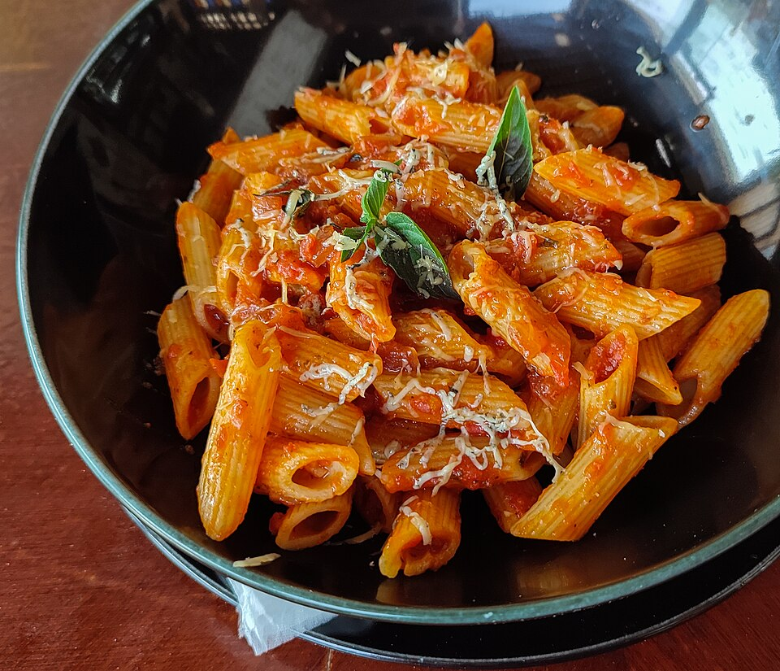
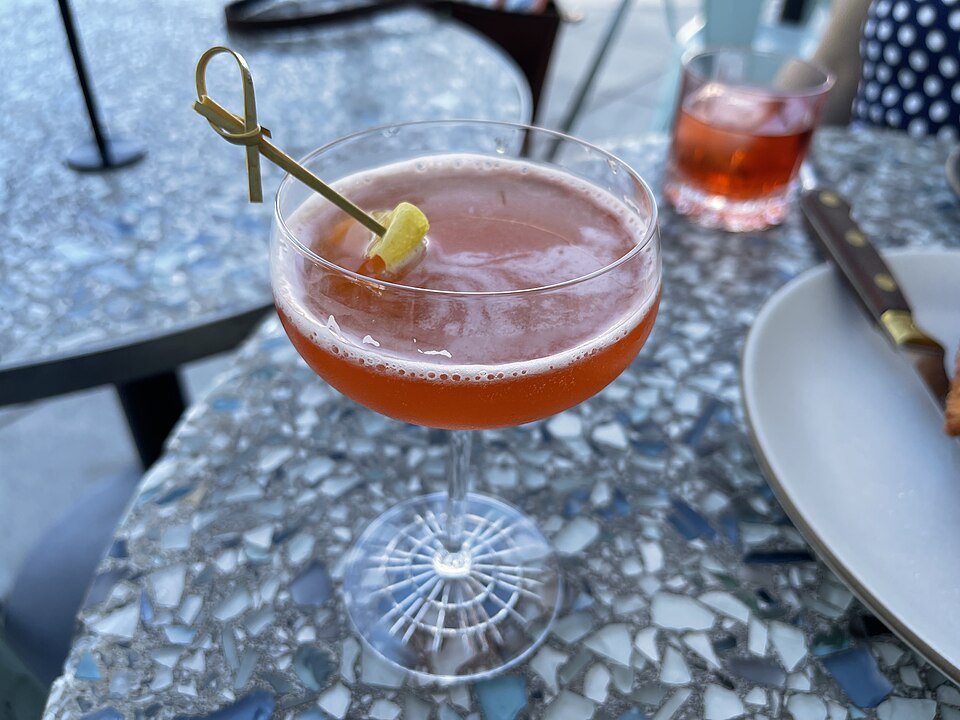

Operating Hours
- Wednesday – Monday: 5:00 PM – 10:00 PM
- Tuesday: Closed for pasta preparation
- Last dining room seating at 9:15 PM
Plan your arrival at Spaghett. Located at 224 West 10th Street in Charlotte's historic Fourth Ward neighborhood, our thirteen-table dining room is open six evenings a week. We recommend advance reservations via Tock and reserve our bar counter for walk-in guests.

Address:
224 West 10th Street
Charlotte, NC 28202
Situated inside the historic 1885 Young-Morrison House between Pine and Poplar streets.
Format:
13-Table Dining Room (Tock)
Walk-In Bar Counter Available
Bookings open 14 days in advance at 10:00 AM.
Fourth Ward is a historic, leafy residential neighborhood with specific parking considerations:


How to secure your seat at Spaghett: